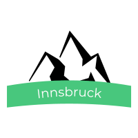

Kuvat
Tietoa matkasta
Jussi Pelkonen
Aloitin matkan Munchenistä, tutustuin suurkaupunkiin ja katselin nähtävyyksiä.
Täytyihän sitä käydä vähän katselemassa Bemareita kun Baijerissa ollaan.
Suurkaupungin hälinästä on hyvä mennä rauhoittumaan puistoihin, tässä kaupungin surin puisto.

Seuraavaksi matkustin junalla Innsbruckiin. Taustalla häämöttivätkin jo alpit.
Ylös alpeille siis, ja olihan sieltä hienot näkymät.
Innsbruck oli mukava pieni kaupunki, sateinen sää oli saanut Inns- joen veden korkealle.
Seuraavaksi otin junan Italian puolelle, Veronaan, Romeon ja Julian kaupunkiin.
Veronan lähettyvillä sijaitsee myös Garda- järvi, jonka rannoille olisi voinut jäädä pitemmäksikin aikaa.
Järven rantoja pääsi kiertämään myös lautalla, ja rannoilla oli paljon pieniä idyllisiä kyliä.
Seuraavaksi matka jatkui Venetsiaan tutkimaan sen huikeita kujia ja kanaaleja.
Kanaalit ja kapeat kadut huokuivat tunnelmaa, ja kaupungissa oli vilskettä yötä päivää.
Nähtävyyksiä kaupungissa riitti, tässä varmaankin Venetsian kuuluisin silta, Rialton silta.